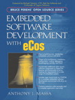
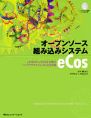

HTML documentation is included with eCos as standard. On-line documentation for all public releases of eCos is provided here as well. Additional documentation concerning GNU toolchains is available in the Red Hat GNUPro Toolkit manuals.
The latest documentation incorporates fixes to the eCos 2.0 documents and additional material relating to new packages which are now available in the anonymous CVS repository.
eCos 2.0 is the most recent official public distribution of eCos. On-line documentation for eCos 2.0 is available for browsing in both HTML and PDF formats. It may also be downloaded in a selection of archive formats for offline viewing. Details are provided on the downloading and installation page.
 Embedded Software Development with eCos is published by Prentice Hall as part of the Bruce Perens Open Source Series.
Author Anthony J. Massa covers eCos architecture, installation, configuration, coding, deployment, and the entire ecos development platform, including support components. Extensive code examples and a full application case study demonstrate every key programming concept, including exceptions, interrupts, virtual vectors, threads, synchronization, networking, web connectivity, debug/bootstrap, and even porting eCos to new hardware.
This book can be found at any good technical book store, or alternatively can be ordered online directly from the publisher, from Barnes & Noble, from Amazon, or many other online book stores. The full book is now also available online for free download as a pdf.
This book has also been translated into Japanese and can be found in any good technical book store stocking Japanese texts, or alternatively can be ordered online at MYCOM books, Amazon and other online bookstores.
Documentation for eCos 1.1, eCos 1.2.1 and eCos 1.3.1 is still available for browsing.